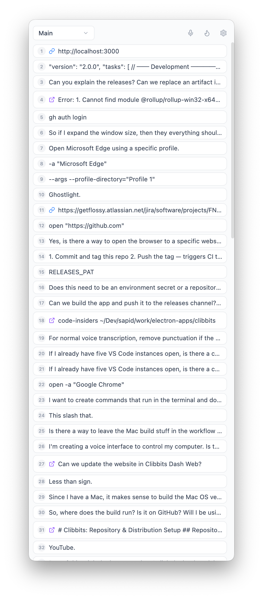

Automatic clipboard history — never lose a copy again.
Every text snippet and image you copy is saved instantly. No manual action required. Clibbits polls your clipboard every 500ms, deduplicates entries, and persists everything to disk.
works locally
